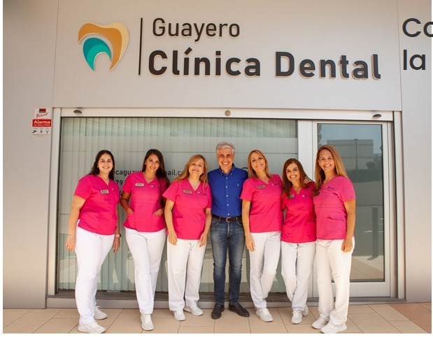

+20 Años de experiencia
Filosofía basada en la confianza, la profesionalidad y el trato individualizado.
Más de 20 años de atención personalizada, especialización, profesionalidad y responsabilidad en los tratamientos son nuestra mejor garantía.

La Clínica Dental Guayero pone a tu disposición un equipo de expertos. Cada dentista está especializado en un tipo de tratamiento para dar solución a los problemas de nuestros pacientes.
Un equipo humano que destaca por su profesionalidad, su calidad humana y el trato hacia sus pacientes.
ConócenosFilosofía basada en la confianza, la profesionalidad y el trato individualizado.
Equipo médico y humano con tecnología de máxima calidad.
Espacios modernos, cómodos y adaptados, a pie de calle.
Información clara y acompañamiento cercano en cada tratamiento.
Revisiones, tratamiento de caries, empastes, reconstrucciones y limpiezas dentales en Los Cristianos. Cuidamos tu salud bucodental con una valoración y un plan adaptados a ti.
Ver servicioValoración de bruxismo y férulas de descarga a medida en Los Cristianos. Revisamos el desgaste dental y las molestias al apretar para orientar los cuidados que necesitas.
Ver servicioEl GENDEX GXDP-700 nos permite realizar para realizar escáner radiográficos 3D de altísima calidad así como radiografías panorámicas y telerradiografías de articulación temporomandibular de maxilar para determinar la edad de crecimiento de los niños.
Ver servicioLa mayoría de los tratamientos que realizamos mediante la adquisición del escáner intraoral 3SHAPE TRIOS 3 nos permite escanear la cavidad bucal para multitud de funciones que realizamos para nuestros pacientes.
Ver servicioEl Sistema Damon elimina la necesidad de usar mecánica tradicional.
El sistema Invisalign es un modelado virtual patentado, procesos de fabricación rápidos y dispositivos prácticamente transparentes y extraíbles llamados “aligners”.
Ver servicioInvisalign y Spark en Los Cristianos. Conoce el tratamiento con alineadores transparentes, el estudio previo y el seguimiento para valorar la opción adecuada para tu sonrisa.
Ver servicioConsiste en una especialidad en la que se engloba desde la prevención hasta el estudio, tratamiento y rehabilitación de cualquier afectación que pueda tener lugar en la boca.
Ver servicioFijaciones de titanio de alta precisión que los dentistas ponen en el maxilar o la mandíbula de pacientes que han perdido uno o varios dientes para servir de «raíces artificiales» donde se pueda fijar una prótesis dental.
Ver servicioCuidamos la salud bucodental de los niños con atención adaptada a su edad. Conoce nuestra atención infantil en Los Cristianos y cómo acompañamos a las familias en la prevención y el cuidado de su sonrisa.
Ver servicioEl cuidado de las encías es parte de tu salud bucodental. Conoce nuestra atención de periodoncia en Los Cristianos: valoración, tratamiento de encías y mantenimiento adaptado a cada paciente.
Ver servicioEl tratamiento de conductos busca conservar los dientes con la pulpa dañada o infectada. Conoce nuestra atención de endodoncia en Los Cristianos y pide una valoración para tu caso.
Ver servicioBlanqueamiento y carillas dentales en Los Cristianos. Valoramos tu sonrisa y te explicamos las opciones para mejorar su apariencia, con un plan adaptado a tu salud bucodental.
Ver servicioValora las opciones para aclarar el tono de tus dientes en Los Cristianos. Te explicamos el resultado que puede esperarse y los cuidados necesarios, con supervisión profesional.
Ver servicioPrótesis fijas, removibles y sobre implantes en Los Cristianos. Estudiamos las opciones para restaurar o sustituir dientes y recuperar función y estética con un plan adaptado a tu boca.
Ver servicioSomos una clínica dental en Los Cristianos (Tenerife) que ofrece un equipo médico de dentistas especializados y una clínica dental con la tecnología más vanguardista del sector. Pretendemos aunar ciencia, tecnología, trato personal y precio. Los tratamientos que realizamos en la clínica, son siempre ejecutados por dentistas cualificados y expertos en la materia, buscando el tratamiento que más se adapte a cada paciente. Para ello contamos con la mejor tecnología que nos ayuda a realizar diagnósticos completos y personalizados a cada uno de los pacientes que visitan nuestra clínica dental en Los Cristianos.
Este usuario solo dejó una calificación.
Este usuario solo dejó una calificación.
Este usuario solo dejó una calificación.
Este usuario solo dejó una calificación.
Este usuario solo dejó una calificación.
cdguayero@gmail.com
Avda. Juan Carlos I, 26
Edificio Guayero, Locales 7, 8 y 9
38650 Los Cristianos
Lunes a Viernes de 10:00-19:00h